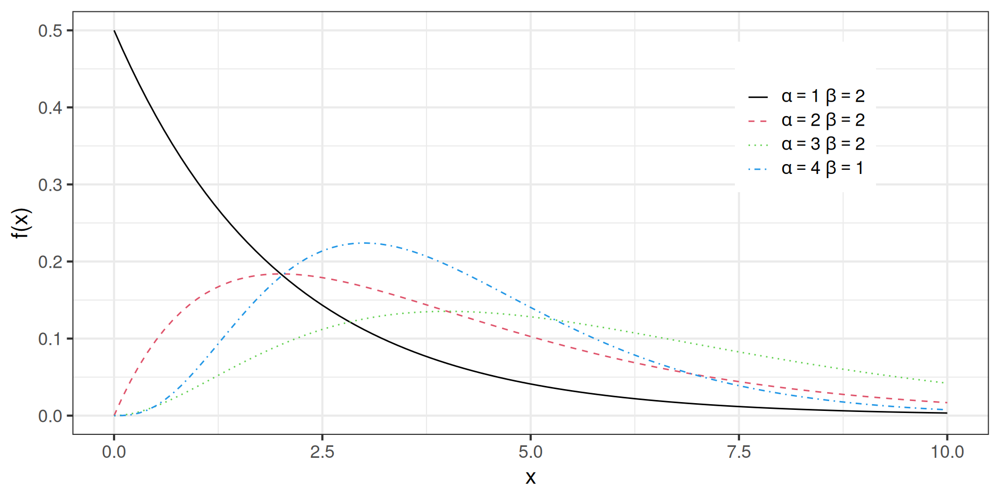
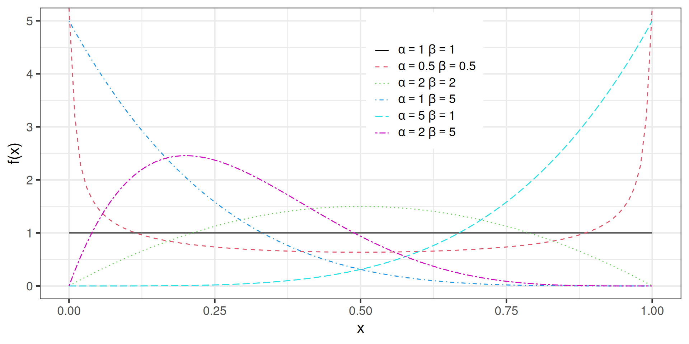
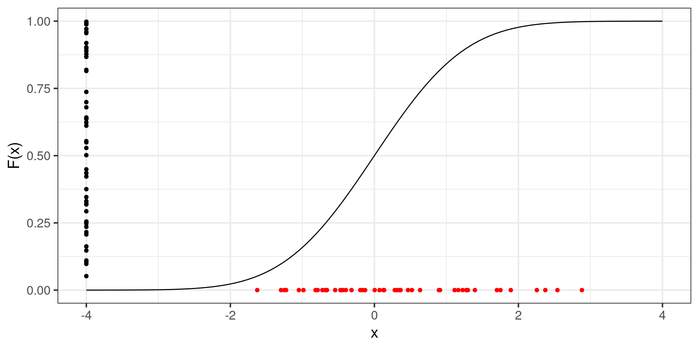
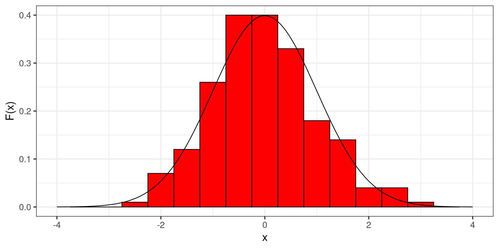

MD21 Introdução à Estatística
Variáveis aleatórias
A função \(\Gamma(\cdot)\)
A função \(\Gamma(z)\), conhecida por função Gamma, é definida para todo \(z>0\) \[\Gamma(z) = \int_{0}^{\infty} t^{z-1}e^{-t}dt\]
Algumas propriedades
- \(\Gamma(z+1) = z\Gamma(z)\)
- Se \(n\) é inteiro, \(\Gamma(n) = (n-1)!\)
- \(\Gamma(1)=1\), \(\Gamma(1/2)=\sqrt{\pi}\)
Distribuição Gamma
Seja \(X\) uma variável aleatória positiva. Dizemos que \(X\) segue uma distribuiçao Gamma com parâmetros \((\alpha, \beta)\), \(X \sim Gamma(\alpha,\beta)\), se \[ f_X(x) = \left\{ \begin{array}{ll} \frac{\beta^\alpha}{ \Gamma(\alpha)} x^{\alpha-1} e^{-x\beta} & \mbox{se } x > 0, \\ 0 & \mbox{c.c}. \\ \end{array}\right.\] onde \(\alpha>0\) e \(\beta>0\).
\[\mathbb{E}(X) = \int_0^\infty x \frac{\beta^\alpha}{ \Gamma(\alpha)} x^{\alpha-1} e^{-x\beta} dx = \cdots = \frac{\alpha}{\beta}\]
Distribuição Gamma
\(X \sim Gamma(\alpha, \beta)\)
A função Beta
A função \(B(z_1, z_2)\), conhecida por função Beta, é definida para todo \(z_1>0\) e \(z_2>0\) \[B(z_1, z_2) = \int_{0}^{\infty} t^{z_1-1}(1-t)^{z_2-1}dt\]
Algumas propriedades
- Simetria: \(B(z_1, z_2) = B(z_2, z_1)\)
- \(B(z_1, z_2) = \frac{\Gamma(z_1)\Gamma(z_2)}{\Gamma(z_1+z_2)}\)
Distribuição Beta
Seja \(X\) uma variável aleatória no intervalo (0,1). Dizemos que \(X\) segue uma distribuiçao Beta com parâmetros \((\alpha, \beta)\), \(X \sim Beta(\alpha,\beta)\), se \[ f_X(x) = \left\{ \begin{array}{ll} \frac{\Gamma(\alpha + \beta)}{ \Gamma(\alpha) \Gamma(\beta)} x^{\alpha-1} (1-x)^{\beta-1} & \mbox{se } x \in (0,1), \\ 0 & \mbox{c.c}. \\ \end{array}\right.\] onde \(\alpha>0\) e \(\beta>0\).
\[\mathbb{E}(X) = \int_0^\infty x \theta e^{-x\theta} dx = \cdots = \theta\]
Distribuição Beta
\(X \sim Beta(\alpha, \beta)\)
Transformações de variáveis aleatórias
Suponha agora que \(X\) tem função de densidade \(f_X(x)\).
Seja \(Y = g(X)\). Qual a distribuição de \(Y\)?
Se \(g(X) = a X + b\), então podemos partir da distribuição conjunta:
\[F_Y(y) = \mathbb{P}(Y \leq y) = \mathbb{P}\left(aX + b \leq y\right) \\ = \mathbb{P}\left(X \leq \frac{y-b}{a}\right) = F_X\left(X \leq \frac{y-b}{a}\right)\]
Transformações de variáveis aleatórias
Portanto, para \(Y = aX + b\),
\[F_Y(y) = F_X\left(X \leq \frac{y-b}{a}\right)\]
E consequentemente,
\[f_Y(y) = \frac{d}{dy} F_Y(y) = \frac{d}{dy} F_X\left(\frac{y-b}{a}\right) = \frac{1}{a} f_X\left(\frac{y-b}{a}\right)\]
Transformações de variáveis aleatórias
Seja \(X \sim N(\mu, \sigma^2)\) e \(Y = aX + b, \qquad a > 0\).
\[f_Y(y) = \frac{1}{a\sigma \sqrt{2\pi}} \exp\left\{ -\frac{1}{2} \left(\frac{y-b-a\mu}{a\sigma} \right)^2\right\}\] ou seja, \(Y \sim N(a\mu + b, (a\sigma)^2)\).
Transformações de variáveis aleatórias
Seja \(Z \sim N(0,1)\) e \(X = Z^2\), qual a distribuição de \(X\)?
\[\begin{eqnarray} F_X(x) & = & \mathbb{P}(X \leq x) = \mathbb{P}(-\sqrt{x} \leq Z \leq \sqrt{x}) = \\ & = & \Phi(\sqrt{x}) - \Phi(-\sqrt{x}). \end{eqnarray}\]
Usando a simetria da Normal, \(\Phi(-a) = 1 - \Phi(a)\). Logo
\[\begin{eqnarray} f_X(x) & = & \frac{d}{dx} 2\Phi(\sqrt{x}) - 1 = x^{-1/2} \phi(\sqrt{x}) = \frac{x^{-1/2}}{\sqrt{2\pi}} e^{-x/2}. \end{eqnarray}\]
Distribuição Chi-quadrado
Seja \(X\) uma variável aleatória positiva. Dizemos que \(X\) segue uma distribuiçao \(\chi^2_1\) com um grau de liberdade, \(X \sim \chi^2_1\), se \[f_X(x) = \frac{x^{-1/2}}{\sqrt{2\pi}} e^{-x/2}, \quad x > 0.\]
Note que a distribuição \(\chi^2_1\) é equivalente a uma distribuição \(Gama(1/2, 1/2)\).
Distribuição Chi-quadrado
\(X \sim \chi^2_1\)

Transformações de variáveis aleatórias
Suponha que \(X\) tem função de distribuição acumulada \(F_X\).
Seja \(U = F_X(X)\). Qual a distribuição de \(U\)?
\[\begin{eqnarray} F_U(u) & = & \mathbb{P}(U \leq u) = \mathbb{P}(F_X(X) \leq u) \\ & = & \mathbb{P}(X \leq F_X^{-1}(u)) = F_X(F_X^{-1}(u)) \\ & = & u. \end{eqnarray}\]
Que é a acumulada da uniforme no intervalo (0,1), ou seja, \(U \sim U(0,1)\).
Transformações de variáveis aleatórias
Suponha agora que \(U \sim U(0,1)\), e seja \(X = F^{-1}(U)\). Então a distribuição acumulada de \(X\) é \(F\).
\[\begin{eqnarray} \mathbb{P}(X \leq x) & = & \mathbb{P}(F^{-1}(U) \leq x) \\ & = & \mathbb{P}(U \leq F(x)) = \\ & = & F_U(F(x)) = F(x). \end{eqnarray}\]
Esse resultado é bastante útil, pois se \(F^{-1}\) for simples de se calcular. Então podemos gerar amostras de \(X\) a partir de amostras de uma uniforme(0,1).
Exemplo
Gerando amostras da Normal(0,1) a partir de amostras da uniforme(0,1).
Exemplo
Transformações de variáveis aleatórias
Seja \(X\) uma variável aleatŕia contínua com densidade \(f_X\) e seja \(Y=g(X)\) onde \(g\) é diferenciável e estritamente monotônica em um intervalo \(I\). E suponha que \(f_X(x) = 0\) se \(x\) não pertença a \(I\). Então \(Y\) tem a seguinte densidade
\[f_Y(y) = f_X(g^{-1}(y)) \left| \frac{d}{dy} g^{-1}(y)\right|\]
Exemplo
Seja \(X \sim N(\mu, \sigma^2)\) e \(Y = e^X\). Qual a distribuição de \(Y\)?
\[\begin{eqnarray} f_Y(y) & = & f_X(g^{-1}(y)) \left| \frac{d}{dy} g^{-1}(y)\right| \\ & = & f_X(\log(y)) \left| \frac{d}{dy} \log(y)\right| \\ & = & \frac{1}{\sigma \sqrt{2\pi}} \exp\left\{ -\frac{1}{2\sigma^2} (\log(y) - \mu) \right\}\frac{1}{y}, \, y > 0 \\ \end{eqnarray}\]
\(Y \sim logNormal(\mu, \sigma^2)\).
Distribuições conjunta
Caso discreto. Dado um par de variáveis aleatórias discretas \((X,Y)\), definimos a função de probabilidade conjunta como \[p_{X,Y}(x,y) = f_{X,Y}(x,y) = \mathbb{P}(X=x, Y=y)\]
Seja o seguinte exemplo para a distribuição de probabilidade de duas variáveis aleatórias
| \(Y=0\) | \(Y=1\) | |
|---|---|---|
| \(X=0\) | 1/9 | 2/9 |
| \(X=1\) | 2/9 | 4/9 |
Distribuições conjunta
Sejam \(X\) e \(Y\) duas variáveis aleatórias, dizemos que \(f_{X,Y}\) é a função de densidade de probabilidade conjunta de \((X,Y)\) se
\(f_{X,Y}(x,y) \geq 0\) para todos \((x,y)\)
\(\int_{-\infty}^{\infty}\int_{-\infty}^{\infty} f_{X,Y}(x,y) dy dx = 1\) e
Para qualquer conjunto \(A \subset \mathbb{R}^2\), \(\mathbb{P}((X,Y)\subset A) = \int \int_Af_{X,Y}(x,y) dy dx\)
Distribuição conjunta
Exemplo. \[f(x,y) = e^{-(x+y)}, \quad x>0 \, y>0\]
\(f_{X,Y}(x,y) \geq 0\) para todos \((x,y)\) (ok)
\[\begin{eqnarray} \int_{-\infty}^{\infty}\int_{-\infty}^{\infty} f_{X,Y}(x,y) dy dx & = & \int_{0}^{\infty}\int_{0}^{\infty} e^{-(x+y)} dy dx \\ & = & \int_{0}^{\infty} e^{-x}\int_{0}^{\infty} e^{-y} dy dx \\ & = & \int_{0}^{\infty} e^{-x} 1 dx = 1. \end{eqnarray}\]
Distribuições marginais
Definição. Se \((X,Y)\) tem distribuição conjunta \(f_{X,Y}(x,y)\), então a distribuição marginal de \(X\) é dada por \[f_X(x) = \left\{ \begin{array}{ll} \sum_y f_{X,Y}(x,y), & \mbox{se } Y \mbox{ discreta} \\ \int_{-\infty}^{\infty} f_{X,Y}(x,y) dy, & \mbox{se } Y \mbox{ contínua.} \\\end{array} \right.\]
E a distribuição marginal de \(Y\) é dada por \[f_Y(y) = \left\{ \begin{array}{ll} \sum_x f_{X,Y}(x,y), & \mbox{se } X \mbox{ discreta} \\ \int_{-\infty}^{\infty} f_{X,Y}(x,y) dx, & \mbox{se } X \mbox{ contínua.} \\\end{array} \right.\]
Exemplo
Seja \(f_{X,Y}(x,y)\) abaixo
| \(Y=0\) | \(Y=1\) | |
|---|---|---|
| \(X=0\) | 3/9 | 1/9 |
| \(X=1\) | 3/9 | 2/9 |
\[f_X(x) = \left\{ \begin{array}{ll} 3/9 + 1/9 = 4/9, & x=0 \\ 3/9 + 2/9 = 5/9, & x = 1\end{array}\right.\]
\[f_Y(y) = \left\{ \begin{array}{ll} 3/9 + 3/9 = 6/9, & y=0 \\ 1/9 + 2/9 = 3/9, & y = 1\end{array}\right.\]
Independência
Dizemos que duas variáveis aleatórias \(X\) e \(Y\) são independentes, \(X \perp Y\), se para todo \(A\) e \(B\) \[\mathbb{P}(X \in A, Y \in B) = \mathbb{P}(X \in A) \mathbb{P}(Y \in B)\]
Se a distribuição conjunta de \((X,Y)\) é dada por \(f_{X,Y}\), dizemos que \(X \perp Y\) se, e somente se, \[f_{X,Y}(x,y) = f_X(x) f_Y(y)\]
Exemplo
No exemplo anterior, vimos que \(f_{X,Y}(x,y)\) é dada por
| \(Y=0\) | \(Y=1\) | ||
|---|---|---|---|
| \(X=0\) | 3/9 | 1/9 | 4/9 |
| \(X=1\) | 3/9 | 2/9 | 5/9 |
| 6/9 | 3/9 |
\(X\) não é independente de \(Y\) pois \(\mathbb{P}(X = 0, Y = 0) = 3/9 \neq \mathbb{P}(X=0)\mathbb{P}(Y=0) = 24/81\)
Variáveis aleatórias independentes
Dizemos que as variáveis aleatórias \(X_1, X_2, \ldots, X_n\) são independentes se \[ f_{X_1, X_2, \ldots, X_n}(x_1, x_2, \ldots, x_n) = \prod_{i=1}^{n} f_{X_i}(x_i)\]
Se a distribuição marginal \(f_{X_i}(x_i)\) for a mesma para todo \(i\), dizemos que \(X_1, X_2, \ldots, X_n\) são independentes e identicamente distribuídos (iid) com função de densidade \(f_X = f_{X_i}, \forall i\).
Distribuições condicionais
Se \((X,Y)\) tem distribuição conjunta \(f_{X,Y}\), a distribuição condicional de \(X\mid Y = y\) é definida por \[f_{X \mid Y} (x \mid y) = \frac{f_{X,Y}(x, y)}{f_Y(y)}\]
Analogamente, a distribuição de \(Y \mid X = x\) é dada por \[f_{Y \mid X} (y \mid x) = \frac{f_{X,Y}(x, y)}{f_X(x)}\]
Distribuições condicionais
Note que a conjunta de \((X,Y)\) pode ser expressa em termos da distribuição marginal e condicional \[ f_{X,Y}(x, y) = f_{Y \mid X} (y \mid x) f_X(x)\]
E integrando (ou somando) \(X\) fora do dois lado, tem-se que \[ f_{Y}(y) = \left\{ \begin{array}{ll} \sum_x f_{Y \mid X} (y \mid x) f_X(x), & \mbox{se } X \mbox{ for discreta} \\ \int_{-\infty}^{\infty} f_{Y \mid X} (y \mid x) f_X(x) dx, & \mbox{se } X \mbox{ for contínua.} \\\end{array} \right.\]
Defindo a lei da probabilidade total para variáveis aleatórias.
Teorema de Bayes
Suponha que conhecemos a distribuição conjunta \(f_{X \mid Y}\) e a distribuição marginal \(f_Y\), então a distribuição condicional \(Y\) dado \(X\) pode ser calculada da seguinte forma \[\begin{equation} f_{Y\mid X}( y \mid x) = \frac{ f_{X \mid Y}(x \mid y) f_Y(y)}{ \int f_{X \mid Y}(x \mid y) f_Y(y) dy} \end{equation}\]